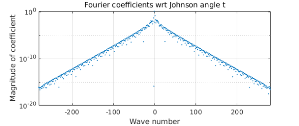
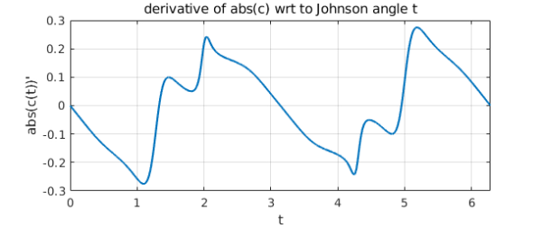
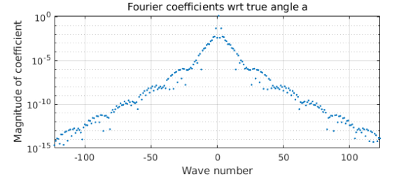
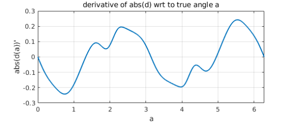

1. A random matrix
Peter Maxwell from Trondheim gave a stimulating talk at last week's Strathclyde numerical analysis meeting about computing the boundary $c$ of the field of values [1]. Before we get to an intriguing $5\times 5$ matrix of his, let's look another more obvious example. Let $A$ be an $n\times n$ matrix with independent normally distributed entries from $N(0,/n)$, $n=60$, and let $c$ be the curve defining the boundary of its field of values (= numerical range):
rng(1) n = 60; A = randn(n)/sqrt(n); c = fov(A);
$c$ is an analytic curve well separated from the eigenvalues of $A$, and it certainly looks smooth to the eye.
plot(c,'linewidth',2), axis equal, xlim([-3 3]), grid on
hold on, plot(eig(A),'.k','markersize',8), hold off
title('field of values and eigenvalues')
Yet its length as a chebfun is very high.
length(c) plotcoeffs(c), grid on
ans = 803
What's going on? How can a curve that looks so smooth be so complicated? (A similar question is raised in a different context in Exercise 8.9 of Approximation Theory and Approximation Practice.)
Before going any further, let's convert to the more natural periodic form (Fourier instead of Chebyshev; see Chapter 11 of the Chebfun Guide). This shortens the length of the chebfun, but only by a factor of about $\pi/2$, so the puzzle persists of why the length is so high.
c = chebfun(@(t) c(t),[0 2*pi],'trig');
length(c)
plotcoeffs(c), grid on
title('Fourier coefficients wrt Johnson angle t')
ans = 563

The convergence of the Fourier coefficients is evidently geometric, confirming that $c$ is analytic, as we expected (ATAP, chapter 8). But its strip of analyticity around the real axis in the complex plane is quite narrow. We can show this by executing the plotregion command and superimposing also some estimates of poles near the real axis computed with aaa:
plotregion(c), axis equal, grid on xx = linspace(0,2*pi,1000); [r,poles] = aaa(c(xx),xx,'tol',1e-10); hold on, plot(poles,'.r'), hold off ylim([-1.6 1.6])
Perhaps this is a bit highbrow. A more straightforward way of seeing the nonsmoothness of $c$ is to plot the derivative of its absolute value:
ac = abs(c);
plot(diff(ac)), grid on
xlabel('t')
ylabel('abs(c(t))''')
title('derivative of abs(c) wrt to Johnson angle t')

Why does such a smooth-looking curve $c$ have such a complicated derivative? A promising conjecture is that it is the parametrization of $c$ that is at fault. This parametrization is in terms of the "Johnson angle" $t$ used in computing the field of values via extreme eigenvalues of the hermitian matrices $(B+B^*)/2$ with $B = e^{it} A$. Let us convert $c$ to a new parameterization in terms of a different variable that we hope will be better behaved, the angle $a$ of the curve from the origin. We can do this by starting with a chebfun representation of $a(t)$.
a = 2*pi + unwrap(angle(c));
plot(a), grid on
xlabel('Johnson angle t')
ylabel('true angle a')
Now we want a new chebfun $d$ that represents $C$ as a function of $a$ instead of $t$. We do this by means of the inverse function $t(a)$,
t = inv(a); d = chebfun(@(s) c(t(s)),[0 2*pi],'trig');
As hoped, $d$ is simpler than before.
plotcoeffs(d)
title('Fourier coefficients wrt true angle a')

The derivative of its absolute value is better behaved.
ad = abs(d);
plot(diff(ad)), grid on
xlabel('a')
ylabel('abs(d(a))''')
title('derivative of abs(d) wrt to true angle a')

2. Peter Maxwell's $5\times 5$ matrix
We now repeat the above for a very interesting $5\times 5$ matrix cooked up by Maxwell, whose field of values boundary has a section that is nearly straight:
A = [ 0.2560 + 0.0573i 0.0568 + 0.0800i 0.1597 + 0.2204i -0.1649 + 0.1315i -0.3639 + 0.0091i; 0.4733 + 0.2805i -0.3192 + 0.1267i 0.0810 + 0.0687i 0.5213 + 0.1574i -0.0596 + 0.2879i; 0.1447 + 0.3037i 0.2942 + 0.1844i -0.2918 + 0.0364i -0.2714 + 0.0265i -0.0849 + 0.2264i; -0.0650 + 0.1360i 0.0952 + 0.0813i -0.0503 + 0.0920i -0.1500 + 0.0814i 0.4742 + 0.1514i; 0.1938 + 0.0344i 0.0419 + 0.1868i -0.0453 + 0.0988i -0.2207 + 0.2483i -0.0772 + 0.1793i ]; c = fov(A); plot(c,'linewidth',2), axis equal, xlim([-2 2]), grid on hold on, plot(eig(A),'.k','markersize',8), hold off
The length is really enormous:
length(c) plotcoeffs(c), grid on
ans =
5704
Again we convert to trig form.
c = chebfun(@(t) c(t),[0 2*pi],'trig'); length(c) plotcoeffs(c), grid on
ans =
3781
The derivative of the absolute value is sharply localized near the special point, confirming that in this case at least, the parametrization with respect to $t$ is problematic.
ac = abs(c);
plot(diff(ac)), grid on
xlabel('a')
ylabel('abs(d(a))''')
title('derivative of abs(d) wrt to true angle a')
The relationship $a(t)$ shows the difficulty:
a = 2*pi + unwrap(angle(c));
a = chebfun(@(s) a(s),[0 2*pi]);
plot(a), grid on
xlabel('Johnson angle t')
ylabel('true angle a')
As hoped, the reparametrized curve $d$ is much simpler than $c$, even if still not as simple as we might have hoped.
t = inv(a); d = chebfun(@(s) c(t(s)),t.ends([1 end]),'trig'); plotcoeffs(d)
3. Eigenvalue avoided crossings
Maxwell has pointed out (private communication) that these effects are related in an interesting way to eigenvalue avoided crossings. For all values of the Johnson angle $t$, the eigenvalues of the matrix $(B+B^*)/2$ mentioned above are real and distinct, but for some values of $t$ they come very close together, and this has a good deal to do with the complexity of $c$ and $d$. See the Chebfun linear algebra examples "Eigenvalue level repulsion" and especially "Analyticity at eigenvalue near-crossings".
Reference
[1] S. Loisel and P. Maxwell, "Path-following method to determine the field of values of a matrix with high accuracy," SIAM J. Matrix Anal. Applics. 39 (2018), 1726--1749.